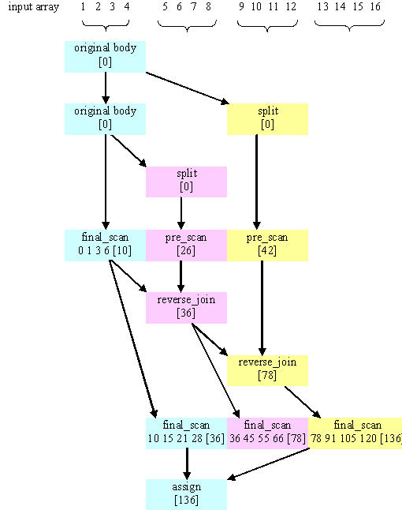

#include "tbb/parallel_scan.h"
template<typename Range, typename Body> void parallel_scan( const Range& range, Body& body ); template<typename Range, typename Body> void parallel_scan( const Range& range, Body& body, const auto_partitioner& ); template<typename Range, typename Body> void parallel_scan( const Range& range, Body& body, const simple_partitioner& );
parallel_scan(range,body) は、並列プリフィクス (並列スキャンとも呼ばれる) を計算します。この計算は、並列計算における高度なコンセプトで、シリアルな依存性があるように見えるシナリオで役立つことがあります。
並列プリフィクスの数学的な定義は以下のとおりです。× を左単位元が id× の結合操作にします。シーケンス z0, z1, ...zn-1 の × の並列プリフィクスはシーケンス y0, y1, y2, ...yn-1 です。
例えば、× が加算の場合、並列プリフィクスは合計と一致します。並列プリフィクスのシリアル実装は以下のようになります。
T temp = id×;
for( int i=1; i<=n; ++i ) {
temp = temp × z[i];
y[i] = temp;
}
並列プリフィクスは、× のアプリケーションを再構築して 2 つのパスにすることで、この処理を並列実行します。シリアル・プリフィクス・プログラムの 2 倍まで × を呼び出す可能性があります。正しい粒度と十分なハードウェア・スレッドが指定されると、より多くのワークを行う場合でも、複数のハードウェア・スレッドにわたってワークを分散することができるので、シリアル・プリフィクスより性能が優れています。
parallel_scan は 2 つのパスが必要なため、2 つのハードウェア・スレッドしかないシステムでは速度向上はわずかです。parallel_scan は、将来のマルチコアシステム向けの手法の中でも非常に有望なものの 1 つです。本質的にシーケンシャルに見える問題をどのように並列化することができるかを示しているため、その手法自体も興味深いものです。
parallel_scan<Range,Body> テンプレートは、並列プリフィクスを汎用的に実装します。以下の表で説明されている署名が必要です。
擬似署名 |
意味 |
|---|---|
void Body::operator()( const Range& r, pre_scan_tag ) |
範囲 r のサマリーを累積します。 |
void Body::operator()( const Range& r, final_scan_tag ) |
範囲 r のスキャン結果とサマリーを計算します。 |
Body::Body( Body& b, split ) |
this と b のサマリーを別々に累積できるように b を分割します。Body *this は、この表の次の行ではオブジェクト a です。 |
void Body::reverse_join( Body& a ) |
a によって累積されたサマリーを this によって累積されたサマリーにマージします。this は以前に a の分割コンストラクターによって a から作成されました。Body *this は、この表の前の行ではオブジェクト b です。 |
void Body::assign( Body& b ) |
b のサマリーを this に代入します。 |
サマリーには、十分な情報が含まれているため、2 つの連続するサブ範囲 r と s について、次のことが可能です。
例えば、配列の合計を計算する場合、範囲 r のサマリーは r に対応する配列要素の合計です。
以下の図は、parallel_scan が整数 1 ～ 16 を含む配列の合計を計算する 1 つの方法を示しています。この図では、時間は下方向に経過します。色分けは、各 Body オブジェクトを示します。サマリーは角括弧で示されています。
配列の最初と最後の 1/4 はプリスキャンされていません。ワーカースレッドが少数の場合や余分なワーカースレッドがない場合、パフォーマンスを向上するため、parallel_scan テンプレートは、可能であればプリスキャンを回避しようとします。利用可能なワーカースレッドがない場合、parallel_scan は、最後のスキャンを使用してサブ範囲を左から右に処理することで、プリスキャンなしでサブ範囲を処理します。そのため、最後のスキャンは、サマリーと最後のスキャン結果を計算する必要があります。サマリーは、次のサブ範囲がワーカースレッドによってプリスキャンされていない場合に必要になります。
parallel_scan の実行例
次のコードは、parallel_scan を使用して前述の × を使用したシーケンシャルの例と同じ結果を計算するために、これらの署名をどのように実装しなければならないかを示しています。
using namespace tbb;
class Body {
T sum;
T* const y;
const T* const z;
public:
Body( T y_[], const T z_[] ) : sum(id×), z(z_), y(y_) {}
T get_sum() const {return sum;}
template<typename Tag>
void operator()( const blocked_range<int>& r, Tag ) {
T temp = sum;
for( int i=r.begin(); i<r.end(); ++i ) {
temp = temp × z[i];
if( Tag::is_final_scan() )
y[i] = temp;
}
sum = temp;
}
Body( Body& b, split ) : z(b.z), y(b.y), sum(id×) {}
void reverse_join( Body& a ) { sum = a.sum × sum;}
void assign( Body& b ) {sum = b.sum;}
};
float DoParallelScan( T y[], const T z[], int n ) {
Body body(y,z);
parallel_scan( blocked_range<int>(0,n), body );
return body.get_sum();
}
operator() の定義は、parallel_scan を使用するときの典型的なパターンを説明します。
reverse_join 操作は、引数が逆であることを除けば、parallel_reduce によって使用される join 操作に似ています。つまり、this は × の右の引数です。parallel_scan テンプレート関数は、並列のワークを生成するかどうか、そしていつ生成するかを決定します。したがって、× が結合操作で Body のメソッドがそれを正確に表現することは重要です。浮動小数点加算のような結合操作は、parallel_scan で使用される結合則に依存して結果が異なって丸められる場合があることを理解して使用する必要があります。再結合は、たとえ同じマシン上であっても実行ごとに異なることがあります。しかし、ワーカースレッドが利用可能でない場合、このセクションのはじめに示されているシリアル形式に関連付けられて実行されます。
simple_partitioner を使用するようにコードを変更した場合は、必ず粒度を指定してください。粒度は次のように指定します。ここでは、粒度を 1000 に指定しています。
parallel_scan(blocked_range<int>(0,n,1000), total, simple_partitioner() );